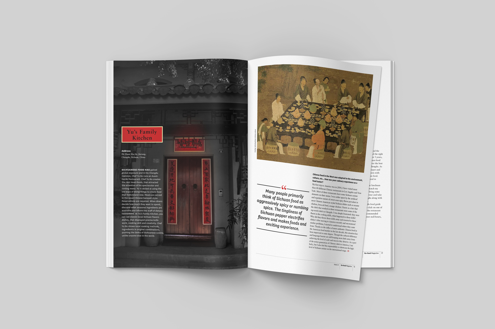
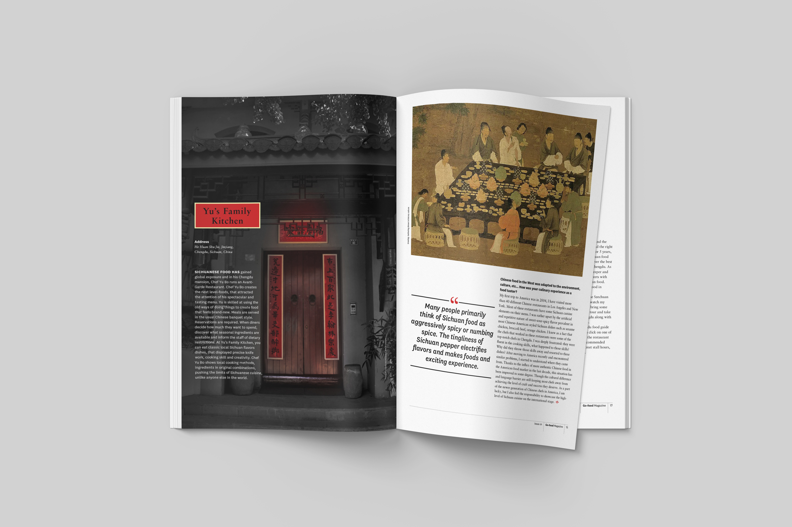

Go-food Magazine Design
Go-food is a local food introduce magazine. It is also recommending readers go local to search for special unique local food. This is issue 01, introducing local tasty food from Chengdu Sichuan. Also, it has an interview feature with the Sichuan food master - Yu Bo.
 
